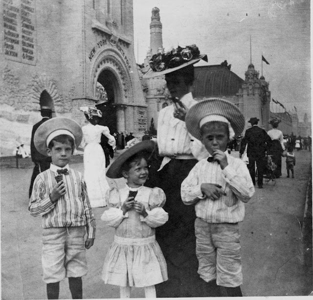

Did you know...St. Louis was the first place that served:
- the ice cream cone1 (ok everyone knows that)
- cotton candy2
- popsicles3
- puffed rice4
- flavored coffee5
But what are we famous for now?
- gooey butter
- "St. Louis style" pizza (you won't like it)
- toasted ravioli
- "concrete" frozen custard
- "bread-sliced" bagels
P.S. don't forget to try our BBQ and porksteaks while you're here too!
Click on the links above if you have no idea what we're talking about! (You'll thank us later.)